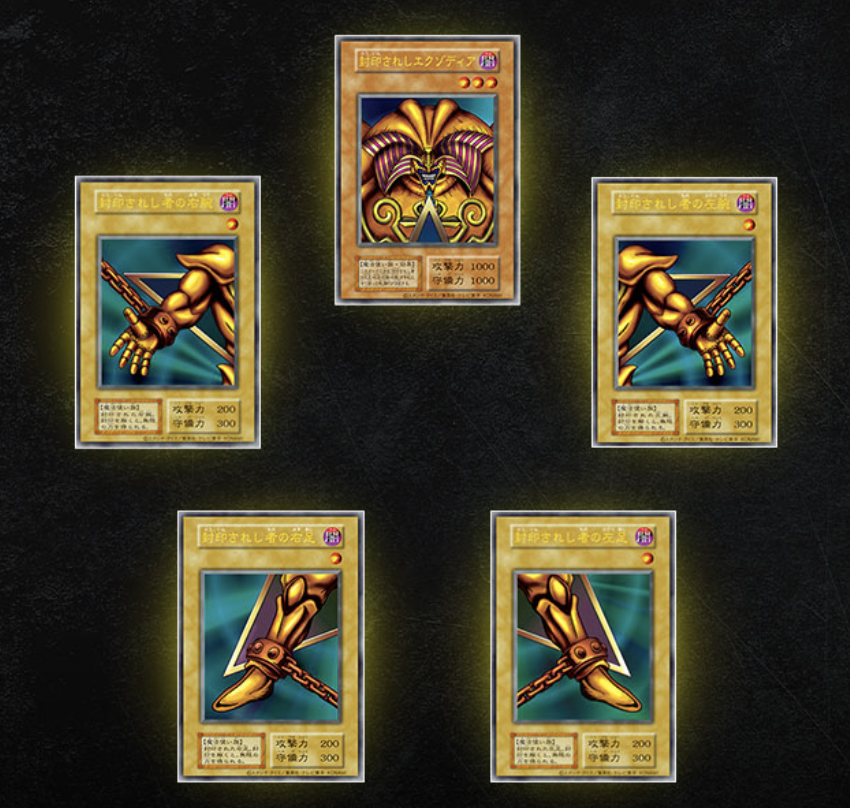

▶ 左下「小学生」からスタート。マスをクリックするとコマが進み、その時代のエピソードが開きます。盤面は左右にスワイプすると全体が見られます。
小学生
内気な少年、ラグビーと出会う
詳しく見る

すごく内気な少年
小学4年生から産毛が生え始める
サラサラヘアを卒業し、ここから天パとして生きていくことになる
当時ハマっていたのは、遊戯王と缶蹴り
遊戯王では「エグゾディア」という、体のパーツが5枚揃ったら絶対に勝てるデッキを使っていて界隈を無双していた
しかし、その5枚のエグゾディアが見事に全部盗まれる
いまだに返ってきていない返してください
中学生
理由は不明。でも走り続けた
詳しく見る
ラグビー部がなかったため陸上部に入部
とにかく毎日走り続ける
長距離を走ってばっかりだったので、めちゃくちゃ細くて体重が軽かった
今思うとよく続けていたなと思う
「ただ走るだけなのに何が楽しいの？」とよく聞かれていたけど、僕にもよくわからない
初めての失恋も経験する
ショックで心臓に穴が開くかと思った
高校生
ラグビーと就職、勢いで進む
詳しく見る
ラグビー部があったため入部
ほのかに昭和が残る学校だったため、入部してすぐに毎年恒例らしい「シメ会」というものがある
内容は2年生にシメられるというもの（内容は割愛）
怖すぎてちびりそうになる
ラグビーはとにかく体格勝負だったけど、なかなか太れなくて苦労した
練習の中で特にきつかったのが「食トレ」
今も毎日ご飯を3合くらいは食べているけど太らない
そんなこんなで進路を決めなければいけない時期になり「どうせ働くなら早いほうがよくない？」という安直な考えで就職
施工管理
泥臭くがんばった
詳しく見る
最初はまったく仕事ができなかった
年下に指示されることが気に食わない人も多く、厳しい現場では毎日怒られていた
同期の中でもたぶん一番仕事ができなかった
働く環境は今思うとかなり劣悪だった気がする
早出残業は当たり前で1ヶ月に180時間くらい残業したこともあった
1ヶ月まるまる休みがない月もあった
毎日のように怒号が飛び交っていた
会議では僕の目の前でパイプ椅子が宙を舞ったこともあった
こんな環境でもしばらく経つと「あれ？なんか通用するようになってきた？」という感覚が出てきて、いつの間にか仕事ができるやつになっていた
差をつけられていた同期もいつの間にか追い抜いていた
同時に調子にも乗り始め、5歳くらい年上の先輩に偉そうに指導したりする
今思うと大人げなかったなと反省
フリーランス
地獄。でも鍛えられた
詳しく見る
Meta広告の運用やLINEの構築を行う
この時期をオブラートに包んで言うと「地獄」
未経験で広告の「こ」の字も知らない状態で飛び込む
「Meta広告学んでみる？」と言われ「学ばせてください」と返事をした翌週には東京の家を引き払って大阪に引っ越す
広告を教えてもらいながら働くという名目で大阪に行ったものの、求められるレベルが高すぎたことに加え本当にいろいろあり心身共に人生で一番のどん底を経験する
人生最悪の期間だったけど、この時期に自分は成長することでしか抜け出せないと実感した
できなかったことができるようになったり知識が増えると視点が変わり人生の選択肢が増える
苦しんでいる人に知識や道しるべを渡せる人間になりたいなあと思うようになった
広告営業
広告だけでは解けない課題に気づく
詳しく見る
業務委託でのつながりをきっかけに広告代理店へ就職
案件を取ったりクライアントと話したりする中で「このお客さんに本当に必要なのはWeb広告なのか？」と疑問を持つようになる
広告だけでは解決できない課題もあると感じ、広告以外の手段も含めてお客様の商品・サービスの売上を伸ばせる、本当の意味で価値提供ができる人材になりたいと思い転職
株式会社セルミュラー
次のステージはここから始まる
詳しく見る
2026年7月1日から株式会社セルミュラーに入社